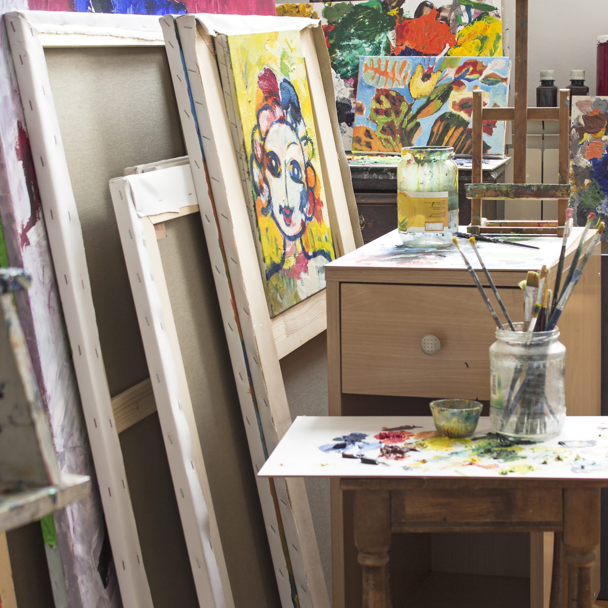

---
# Feel free to add content and custom Front Matter to this file.
# To modify the layout, see https://jekyllrb.com/docs/themes/#overriding-theme-defaults

layout: home
---
  <div class="container">
    <div class="p-5 mb-4 bg-body-tertiary rounded-3">
      <div class="container-fluid py-5">
        <h1 class="display-5 fw-bold">About Me</h1>
        <p class="col-md-8 fs-4">
          Read about me below or jump to my Resume
        </p>
        <a class="btn btn-primary btn-lg" href="/resume.html">Past work and Experience</a>
      </div>
    </div>
    {% capture about-me %}{% include about-me.md %}{% endcapture %}
    <div class="mb-3 mb-md-0 ms-md-3 w-md-50 float-md-end border border-md-0 p-2 p-md-0">
      
    </div>
    <div class="pe-3">
      {{ about-me | markdownify }}
    </div>
  </div>

